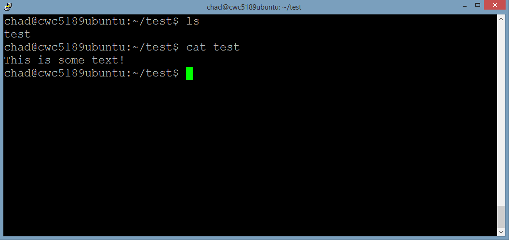

cp is a command which makes a copy of a file.
When you enter the command
% cp test test2
Unix will copy the file named test and create a new file named test2.
As you can see from the picture above, I check to see what files I have in my test folder and there is only the test file from earlier. (Refer to Lesson 1) Then I copy the file named test to a new one named test2 using the
There are instances where you may want to move a file to a different location in your folder structure or rename a file. mv is a command designed to help with this.
When you enter the command
% mv file1 filepath
Unix takes file1 and changes it's path to reflect the filepath specified. Even if this includes changing the name.
As you can see from the picture above, I check my working directory for files and I move the file named test to the subfolder using the mv command! I confirm this by switching to the subfolder using cd and listing it's contents.
rm is used to remove files. Great care has to be taken before running the rm command. There is no way to recover the files which are removed unless they were backed up.
When you enter the command
% rm test
Unix will look in your current working directory for a file named test and remove it if found.
As you can see from the picture above, I am in my subfolder directory still with the test file in it. I use the
The cat command is used to print out the contents of a file to the screen.
When you enter the command
% cat test
Unix will grab the file named test, and print whatever is inside the file to your terminal.

As you can see from the picture above, I check to see what files I have in my test folder and there is a test file that I made that has some text in it. I then use